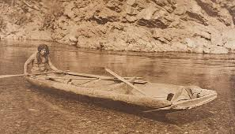

History
We have learned a lot since 1962, when our founder George Armstrong put his raft into the Stanislaus River for
the first
time and became a pioneer of California whitewater rafting. It was trial and error in those days, but year after
year
and decade after decade we have improved technique, refined equipment, and learned how to put on rafting trips
leading
people down rivers in a responsible, safe, and enjoyable manner.

Having explored and set up 10 river operations throughout the State that vary from the easiest float trips to
the most
difficult whitewater and everything in between has given us a broad experience level and a hard-to-match
expertise.
Over the past 60+ years, we have established ourselves as the most knowledgeable and experienced California
rafting
outfitter. This is one reason why more people have trusted All-Outdoors for their California whitewater
adventure than
any other rafting company.